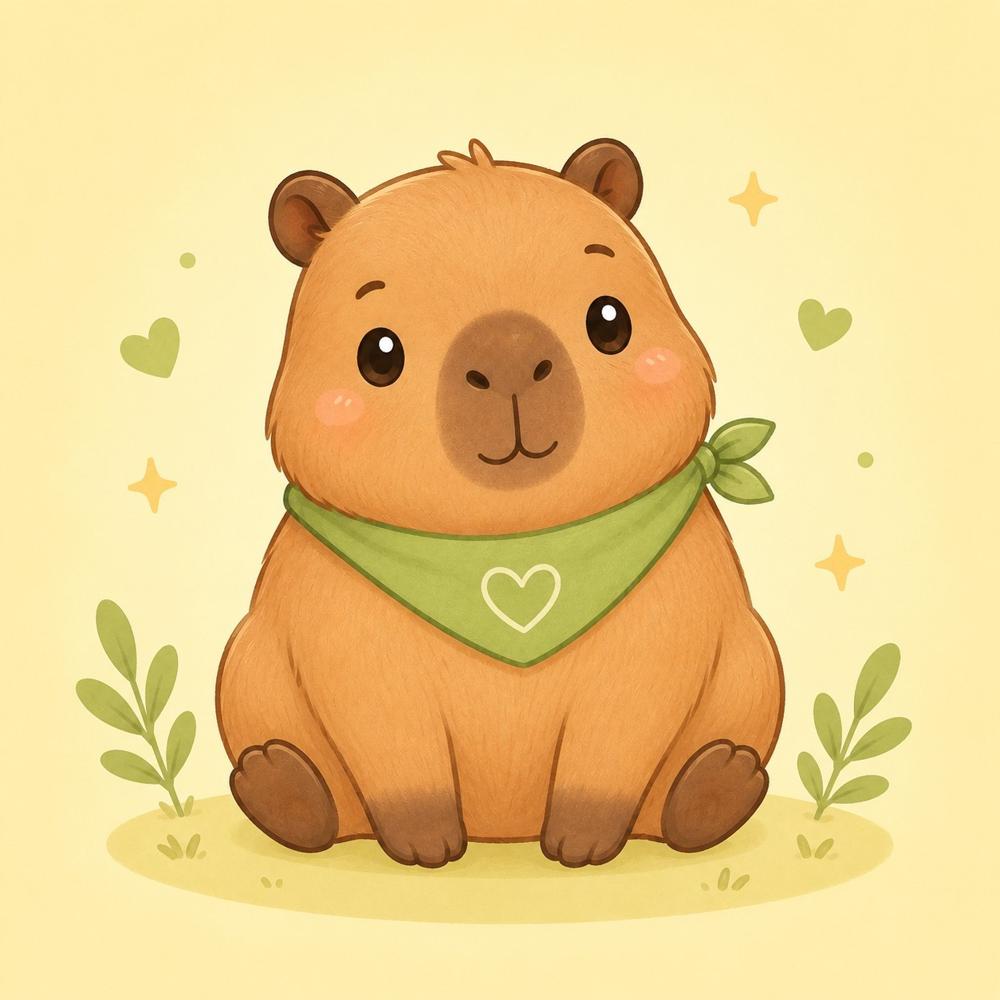

Check-in Cảm Xúc Hôm Nay
Dành một chút thời gian lắng nghe và kết nối với cảm xúc của chính mình chị nhé.
Số điện thoại giúp bác sĩ nhận ra lượt check-in của chị. Số chỉ lưu trong bảng của bác sĩ phụ trách, không hiện cho người khác. Nếu mạng yếu, máy này giữ tạm tới khi gửi được.
1 Hôm nay chị cảm thấy thế nào?
Kéo thanh trượt, bé Capybara sẽ đổi mặt theo. Mức nào cũng được nhé.

5 - Bình thường (Ổn)
2 Cảm xúc hiện tại của chị giống bé Capybara nào nhất?
Chạm chọn 1 bé giống chị nhất lúc này. Cảm xúc không đúng cũng không sai.
💡 Chị nhập số điện thoại và chạm chọn 1 bé Capybara là xong nhé.